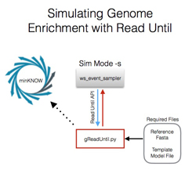
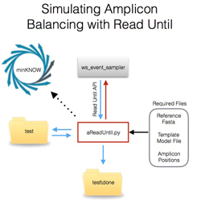

Selective Sequencing of Genomic Regions
Important Note:
Running read until will influence the behaviour of your flow cell and change the output of your sequencing experiment. You are strongly advised to run simulations of read until prior to running on a live flow cell. The code as presented here is a demonstration of read until and one method by which it can be implemented. Users run this code entirely at their own risk.
To use Read Until you must have an appropriate model file extracted from a read.
See Extracting a Model for details.
gReadUntil.py - Genome Selection Simulation
This script enables the selection of a specific region of a genome. We demonstrate this using Lambda and will first do so in simulation mode - illustrated below. Blue lines illustrate the flow of (simulated) event data, red lines the flow of rejection messages. Black dashed lines are messages being sent to minKNOW by the script so that an end user is aware that minKNOW is being manipulated.

This code optionally processes reads on odd numbered channels - it allows all even numbered channels to be sequenced regardless of the target. This enables direct comparison of read until on one flow cell.
First check you are in the correct folder:
cd \grouper\binaries
The default read type generated by ws_event_sampler is derived from E. coli. The current CPU bound version of DTW we are using will struggle on a genome of this size. Thus we suggest you run the simulator with (recalling to run this script in a separate cmd window as an administrator):
bin\ws_event_sampler.exe -p 9200 -s --sim-channels 100 --sim-fragment-length 5 250 500 --sim-fasta C:\path\to\RUscripts\J02459.fasta --sim-log log.txt
You can obviously edit the number of channels and fragment lengths as you wish.
In a separate command window, you can see the gReadUntil.py help statement:
First browse to the correct folder:
cd \path\to\RUscripts\ReadUntil
Then run:
python gReadUntil.py -h
which outputs:
usage: gReadUntil.py [-h] -fasta FASTA -targets [TARGETS [TARGETS ...]] -procs
PROCS -t TIME -m TEMP_MODEL [-ip IP] -p PORT
[-log LOGFILE] [-length LENGTH] [-skip] [-v] [-ver]
gReadUntil.py: A program providing read until for genome sequences with the
Oxford Nanopore minION device. This program will ultimately be driven by
minoTour to enable selective remote sequencing. This program is partly based
on original code generously provided by Oxford Nanopore Technologies.
optional arguments:
-h, --help show this help message and exit
-fasta FASTA, --reference_fasta_file FASTA
The fasta format file describing the reference
sequence for your organism.
-targets [TARGETS [TARGETS ...]]
Positional IDs to enrich for in the form seqid:start-
stop . Can be space seperated eg: J02459:10000-15000
J02459:35000-40000
-procs PROCS, --proc_num PROCS
The number of processors to run this on.
-t TIME, --time TIME This is an error catch for when we cannot keep up with
the rate of sequencing on the device. It takes a
finite amount of time to process through the all the
channels from the sequencer. If we cannot process
through the array quickly enough then we will 'fall
behind' and lose the ability to filter sequences.
Rather than do that we set a threshold after which we
allow the sequencing to complete naturally. The
default is 300 seconds which equates to 9kb of
sequencing at the standard rate.
-m TEMP_MODEL, --model TEMP_MODEL
The appropriate template model file to use
-ip IP, --ip-address IP
The IP address of the machine running minKNOW.
-p PORT, --port PORT The port that ws_event_sampler is running on.
-log LOGFILE, --log-file LOGFILE
The name of the log file that data will be written to
regarding the decision made by this program to process
read until.
-length LENGTH, --library-length LENGTH
Provide the average expected length of your library.
This offset will be applied to reads that are likely
to extend into your region of interest on either
strand.
-skip, --skip_even If set, this will allow all reads from even numbered
channels to be sequenced regardless of where they map.
This provides an internal control.
-v, --verbose-true Print detailed messages while processing files.
-ver, --version show program's version number and exit
An example run of gReadUntil.py:
python gReadUntil.py -f ..\J02459.fasta -targets J02459:10000-20000 J02459:30000-45000 -procs 8 -t 100 -m C:\grouper\binaries\conf\synthesis\model.txt -ip localhost -p 9200 -length 1000
This configuration will map reads to the reference genome and select reads which map between 10-20 kb and 30-45 kb. We assume the library has an average length of 1kb (-length 1000) and so reads which start 500 bases 5' of the site of interest or 500 bases 3' (on the reverse strand) will be sequenced.
The script will output (note: You must choose Y or N to initiate read until):
{'J02459': 48502}
processing the reference fasta.
ID J02459
length 48502
FORWARD STRAND
REVERSE STRAND
<type 'dict'>
Failed to connect to minKNOW. Likely reasons include minKNOW not running, the wrong IP address for the minKNOW server or firewall issues. Two way control will not be possible with minKNOW. <urlopen error [Errno 61] Connection refused>
`
;` ,;
:;;;;;;;;;;;;;;;,
, .;;;;;, ,
@@@@@@@@ ;;;;;;; @@@@@@@@
@@@@@@@@@@# ;;;;; +@@@@@@@@@@
#@@@@@@`@@@@@ .;. @@@@@.@@@@@@@
.@@@@@ @@@@@@@@@@@ @@@@@:
.@@@@` @@@@@@@@@ @@@@,
'@@@@@@+ @@@@@@@ '@@@@@@+
;@@@# @@@@@. +@@@; inoTour read until routines.
.;;;;;;;,
;;;. .;;;`
;; ;;`
Welcome to the .;;: ,;;,
This script WILL implement read until.
If you proceed it is at your own risk.
Seriously - are you happy to proceed? Entering yes will make it your fault... [Y/n]
***********************************************************************************************
**** This version of the code will process reads regardless of channel. ****
***********************************************************************************************
1459369047.53
Running Analysis
Hanging around, waiting for the server...
Running Analysis
Hanging around, waiting for the server...
Running Analysis
Client connection started. Beginning unblock loop...
2016-03-30 21:17:50 Unblocking 10
2016-03-30 21:17:51 Unblocking 13
2016-03-30 21:17:52 Unblocking 17
2016-03-30 21:18:06 Unblocking 2
2016-03-30 21:18:09 Unblocking 1
Here the code was executed prior to starting ws_event_sampler so the code waited for the server to start (Hanging around...). Once ws_event_sampler was started, the Connection is initiated and the code reports the number of channels it is rejecting reads from (Unblocking) at regular intervals.
The experiment can be terminated by Ctrl-C.
ws_event_sampler can then be terminated with Ctrl-C.
Inspection of the log.txt file from ws_event_sampler will allow validation of the code (an excerpt is shown):
channel_name,seq_name,seq_index,seq_length,seq_head,read_number,read_start,read_event_count,read_reason
.
.
.
11,J02459,1019,1012,TGGTTGCCGACGGATG,4,217446,390,Unblock
19,J02459,23886,1021,TTAAGTCTTCTTTCCC,4,220468,376,Unblock
20,J02459,18434,988,GATAGCTGAAAACTGT,5,92238,1055,Natural
22,J02459,3953,1023,TTCCCGGAATTACGCC,4,222261,364,Unblock
24,J02459,5461,988,CAGATCACCGCAGCGG,4,216961,393,Unblock
26,J02459,47375,1012,TCAGAATAAAACAATT,4,218657,383,Unblock
27,J02459,32542,971,GGTTTTCATTGATGAT,5,92238,1038,Natural
28,J02459,45131,994,TAATCGACCTTATTCC,4,222470,363,Unblock
36,J02459,32223,979,GGAGTGATGTCGCGTT,5,97420,1046,Natural
.
.
.
4,J02459,9503,1020,GCCTTCCAGCCGGAGG,16,1035027,0,Stopped
3,J02459,31374,1002,ACCAATTTCAGCCAGT,19,1136723,0,Stopped
2,J02459,31534,969,GTCACCCACATGCTGT,20,1032682,0,Stopped
1,J02459,12539,977,GCGGCGATGCTGACCG,16,1057685,0,Stopped
Note: The simulator only simulates reads from the forward strand. It is possible to force it to simulate both forward and reverse strands by supplying a fasta file containing both strands.
In the log file excerpt, Unblock = a rejected read, Natural = a read that has completed normally, Stopped = a read that finished prematurely due to ws_event_sampler being shut down.
By inspection of the above excerpt, all reads ending Naturally have start sites within the specified regions, whereas reads wich were rejected fall outside of the required regions.
gReadUntil.py - Read Until Genome Selection
Important Note:
Running read until will influence the behaviour of your flow cell and change the output of your sequencing experiment. You are strongly advised to run simulations of read until prior to running on a live flow cell. The code as presented here is a demonstration of read until and one implementation. Users run this code entirely at their own risk.
Below is an image illustrating the work flow of gReadUntil on a live run. Note that the data flow is now from the live running minKNOW to ws_event_sampler:

To run on live data, first change the configuration of ws_event_sampler:
(make sure you are in the correct folder):
cd \grouper\binaries
Then:
bin\ws_event_sampler.exe -p 9200
This will now stream live data from whatever is being sequenced in minKNOW on port 9200
To run gReadUntil you MUST switch the model file to one appropriate for your chemistry and pore type. If you use the wrong model file you will get incorrect matching. We suggest re running the getmodels.py script on a base called read from your most recent run to check the model has not changed.
In a seperate command window navigate to:
cd \path\to\RUscripts\ReadUntil\
The run:
python gReadUntil.py -f ..\J02459.fasta -targets J02459:10000-20000 J02459:30000-45000 -procs 8 -t 100 -m ..\template_r7.3_e6_70bps_6mer_6.model -ip localhost -p 9200 -length 1000
Note: gReadUntil.py will write a message to the minKNOW messages window to tell you that we are remotely interacting with it.
Note: You should set the -length parameter to the expected average length of your library.
Note: As long as the appropriate ports are not blocked by your firewalls there is no reason why this code cannot be run on a separate computer - just configure the -ip statement accordingly.
Note: ws_event_sampler doesn't write out a log file when running on real data. gReadUntil can optionally output a log file in these cases with the -log option (e.g -log greaduntil.log). This will output the following information:
Message:Channel,Read Number,Decision,Read Start Time,Ref ID,Distance,Orientation,Mapping Site
INFO:24,2,REJ,23180.0,J02459,40.2154438853,F,3946
INFO:25,2,REJ,23180.0,J02459,55.6327533467,F,6118
INFO:26,2,SEQ,23180.0,J02459,76.1823545251,F,30637
INFO:27,2,SEQ,23180.0,J02459,59.4201521716,F,34466
INFO:28,2,REJ,23180.0,J02459,54.9151805152,F,47491
INFO:20,2,SEQ,23180.0,J02459,52.824718186,F,30341
INFO:29,2,REJ,23180.0,J02459,79.6781198595,F,20583
INFO:21,2,REJ,23180.0,J02459,38.8591792471,F,7760
INFO:23,2,REJ,23180.0,J02459,88.8619009677,F,20119
INFO:22,2,REJ,23180.0,J02459,42.0277615893,F,5046
INFO:4,2,REJ,23180.0,J02459,70.3307290757,F,26892
INFO:8,2,REJ,23180.0,J02459,53.4937773307,F,5241
INFO:59,2,SEQ,23180.0,J02459,54.0416642491,F,16105
INFO:58,2,SEQ,23180.0,J02459,41.8579884151,F,12718
INFO:55,2,SEQ,23180.0,J02459,40.0786231863,F,44787
INFO:54,2,REJ,23180.0,J02459,57.7941719418,F,4125
INFO:57,2,SEQ,23180.0,J02459,38.6372122551,F,10265
Amplicon Balancing and Selective Sequencing
This script enables balanced sequencing of individual amplicons from a pool of amplicons. In its current form the script will try to balance the number of amplicons sequenced and so ensure uniform coverage. Alternatively, the script will enable the selection of individual amplicons, or even different coverage depths for each amplicon.
Read Tracking
These methods are complicated by how the script tracks the final reads. We currently define three different optional counting points for a read:
1) read - We track each channel individually. A read is assumed to have completed if another read is seen at that channel. This method assumes that every read start reported by read until will result in a true final sequenced read. By observation, we know that this assumption can fail. Presumably unseen minKNOW errors contribute to some of these failures. It is also possible that an observed read is not a true sequence or failed to generate sufficient data.
2) file - Here we track files as they are written to disk. Files written to disk are paired up with entries tracked via read until and so matching data are conserved. When running a 2D library prep, a common failure are 1D reads - i.e a complement sequence is not detected. Thus it is possible that when counting files, 1D only reads might lower the yield.
3) 2d - Here we track files in the same way, but further we inspect for the 2d flag within a file. This allows us to count the number of 2d potential reads (all prior to base calling). It should be noted that the current version of minKNOW at the time of writing - 0.51.1.62 - has some problems with event and hairpin detection, resulting in lower than expected 2d read counts.
minKNOW Interaction
Because aReadUntil implements read tracking it needs to be able to 'see' reads as they are written to disk. This script also provides an implementation of the 'Run Until' concept - so it can optionally stop your sequencer when it believes a task is complete. It therefore communicates with minKNOW and sends messages to the Messages window on minKNOW. Because of this it expects minKNOW to be running and if the software cannot communicate with minKNOW it will stop with an error message. It makes this requirement even when running from the simulator.
Running with metrichor/basecallers
aReadUntil interacts with read files. Metrichor moves files as they are basecalled from the folder they are in to a second folder. To avoid conflict, we have made aReadUntil move files as well. You should therefore point metrichor at this folder, not the usual output folder. The order of events is:
1) minKnow writes file to folder (typically C:\data\reads)
2) aReadUntil observes read, processes it and moves it to a 'done' folder ( C:\data\reads\done)
3) metrichor reads files from the done folder and moves them to 'uploaded' and 'downloaded' as appropriate (C:\data\reads\done\uploaded and C:\data\reads\done\downloads)
First navigate to the correct folder:
cd \path\to\RUscripts\ReadUntil\
To see the help message from aReadUntil type:
python aReadUntil.py -h
which will output:
usage: aReadUntil.py [-h] -fasta FASTA [-c] -ids IDS [-d DEPTH]
[-cd CUSTOMDEPTH] -e DEPTHERROR -procs PROCS -t TIME -m
TEMP_MODEL -g GOAL [-precision] [-seq SPEED] [-i] [-s]
[-ip IP] -p PORT [-wt WRITETIME] -w WATCHDIR
[-log LOGFILE] [-v] [-v2] [-sim] [-ver]
aReadUntil: A program providing read until with the Oxford Nanopore minION
device. This program will ultimately be driven by minoTour to enable selective
remote sequencing. This program is based on original code generously provided
by Oxford Nanopore Technologies. Note that whilst some parameters can be set
via a config file, the explicit parameters to stop a run (-s), prevent read
until working (-i) and switch to presicion mode (-precison) can only be set
via the command line. Args that start with '--' (eg. --reference-fasta-file)
can also be set in a config file
(/Users/mattloose/Dropbox/fixes/RUscripts/UPDATES/ReadUntil/aReadUntil.config
or ) by using .ini or .yaml-style syntax (eg. reference-fasta-file=value). If
an arg is specified in more than one place, then command-line values override
config file values which override defaults.
optional arguments:
-h, --help show this help message and exit
-fasta FASTA, --reference-fasta-file FASTA
The fasta format file describing the reference
sequence for your organism.
-c, --custom-genome This will use a reduced search space genome to match
against.
-ids IDS, --ids IDS A file containing a list of amplicon positions defined
for the reference sequence. 1 amplicon per line in the
format fasta_sequence_name:start-stop e.g
EM_079517:27-1938
-d DEPTH, --depth DEPTH
The desired coverage depth for each amplicon. Note
this is unlikely to be achieved for each amplicon and
should probably be an overestimate of the minimum
coverage required.
-cd CUSTOMDEPTH, --custom-depth CUSTOMDEPTH
A comma seperated list of custom depths for each
amplicon. You must provide a coverage depth for each
amplicon in the order they are presented in the ids
file.
-e DEPTHERROR, --error DEPTHERROR
Set an error range for coverage depth.
-procs PROCS, --processor-number PROCS
The number of processors to run this on.
-t TIME, --time TIME This is an error catch for when we cannot keep up with
the rate of sequencing on the device. It takes a
finite amount of time to process through the all the
channels from the sequencer. If we cannot process
through the array quickly enough then we will 'fall
behind' and lose the ability to filter sequences.
Rather than do that we set a threshold after which we
allow the sequencing to complete naturally. The
default is 300 seconds which equates to 9kb of
sequencing at the standard rate.
-m TEMP_MODEL, --tempalte-model TEMP_MODEL
The appropriate template model file to use
-g GOAL, --goal GOAL The measure by which reads will be counted - either
based on the presence of files ( -g file) or potential
2D files generated (-g 2d) or new reads generated ( -g
read )
-precision This option will attempt to obtain exactly the number
of reads required per amplicon. It is provided as a
novelty to illustrate the theoretical level of control
of the device. In reality it will slow down the time
taken to reach a specific goal due to the possibility
of reads failing and the delay in writing true reads
to disk.
-seq SPEED, --seq-speed SPEED
This is the assumed sequencing speed. The default is
set at 30b/s (the speed of the simulator). This should
be configured to the appropriate value for your
chemistry.
-i This will prevent read until from working but will
otherwise report what is happening in the sequencer.
-s This will enable read until to stop your sequencing
when it is complete.
-ip IP, --ip-address IP
The IP address of the minKNOW machine.
-p PORT, --port PORT The port that ws_event_sampler is running on.
-wt WRITETIME, --write-time WRITETIME
If you are automatically stopping the minKNOW run, the
stop command will wait n seconds after the last read
has completed to ensure all files are written. Default
value is 15.
-w WATCHDIR, --watch-dir WATCHDIR
The path to the folder containing the downloads
directory with fast5 reads to analyse - e.g.
C:\data\minion\downloads (for windows). This folder
must already exist. The script will not create it for
you. This is to prevent the wrong folder being
monitored for files which would disrupt read until.
-log LOGFILE, --log-file LOGFILE
The name of the log file that data will be written to
regarding the decision made by this program to process
read until.
-v, --verbose-detail Print more detailed coverage info.
-v2, --verbose-true Print detailed messages while processing files.
-sim, --sim This action will write artificial fast5 files to a
folder for testing purposes.
-ver, --version show program's version number and exit
There are a number of important parameters here.
-i > Using this option, read until will actually be disabled. This allows the user to monitor what is happening on a sequencer via the read until api without ever actually rejecting reads. All other elements of the code (including squiggle matching) function. This allows for testing of the code without affecting sequencing.
-s > This option enables 'Run Until' - so the script will switch off your sequencer when it determines the goal has been reached.
-wt > Used in conjunction with 'Run Until' this option will allow the sequencer to continue running for a period of time after the goal has been reached. If using file or 2d tracking the default value of 15 seconds is sufficient. For read tracking it may be desirable to set this value to 180 or greater. This parameter can be tuned according to the rate at which minKNOW writes reads to disk.
-seq > The various chemistries used for nanopore sequencing operate at different speeds. This script tracks the number of reads currently being sequenced. To ensure that we don't end up with a read which never finishes being counted as 'currently sequenced' we calculate the anticipated length of the amplicons and with knowledge of the sequencing speed allow reads to 'time-out' if they have been considered active for too long. For the simulator, the default value of 30 b/s is correct, but this should be specified for the chemistry in use.
-c > This option will remove sequence from the center and 3'end of each strand of each amplicon from the reference sequence being matched too. This reduces the search space and so speeds up the rate of squiggle matching.
-precision > This option will attempt to limit the over sequencing of reads. It often adds time to a sequencing run rather than reducing it. This is a consequence of the observation that not all reads that begin to be sequenced will end up being written to disk for a variety of failure reasons. We do not suggest using this option at this time.
-sim > This option will write out artificial fast5 files derived from the read until data stream to fully enable testing of the scripts. Reads are automatically written to the specified watchdir (set with the -w flag)
aReadUntil.py - Amplicon Selection Simulation
First we illustrate the workflow of amplicon balancing on simulated data. Note that we now use our script to write simulated read to a test folder to enable testing of read counting (see below). As before blue lines indicate the flow of event/read data, red lines the rejection control messages and dashed black lines the flow of control information to minKNOW.

To simulate amplicon sequencing we provide a workaround to enable the ws_event_sampler to stream individual amplicons. This requires a specially engineered fasta file, lambda_amplicons.fasta. This file contains amplicons in both forward and reverse complement orientation. Of the 11 amplicons, all odd numbered amplicons are present at 1x (1,3,5,7,9,11). Even numbered amplicons are present at different concentrations to simulate an uneven library.
In an separate administrator window navigate to:
cd \grouper\binaries
To run ws_event_sampler with this file in a cmd window with administrator privileges enter:
bin\ws_event_sampler.exe -p 9200 -s --sim-channels 512 --sim-fragment-length 1 1 1900 --sim-fasta C:\path\to\ReadUntil\lambda_amplicons.fasta --sim-log amplicon-sim.log
Note: You can vary the number of channels as you feel appropriate for your computer. For the sim fragment length, we specify a length of 1900 bases per read. This forces the fragment to include the entire lenght of each amplicon with some flex around the start site, approximating what you might see on a real run.
To run an appropriate command for aReadUntil.py enter this command in another cmd window:
python aReadUntil.py -fasta ..\J02459.fasta -ids ..\lambda_amplicons.txt -procs 8 -c -t 40 -m C:\grouper\binaries\conf\synthesis\model.txt -g 2d -seq 30 -ip localhost -p 9200 -w test -s -sim -d 50 -e 0 -i
This command will use the lambda reference (-fasta ..\J02459.fasta) and the amplicon definitions (-ids ..\lambda_amplicons.txt) and match reads across 8 processors (-procs 8).
To optimise the experiment, we are tuning the reference sequence to omit regions that are unlikely to appear in the reads using the -c flag. This reduces the search time, but will misidentify reads that do not start within the first appoximately 400 bases of a specific amplicon.
The -t flag is set to 20 seconds. If a read has not been processed within 40 seconds of its start time it is automatically rejected. This is to ensure that a long queue of reads does not build up waiting for processing on slow systems. In the event of a timeout, the message:
Read timeout
Will be written to the screen. This is a warning to indicate that the script is not keeping up with the run. It would be advisable to consider upping the number of processors available or reducing the scale of the experiment if possible. One or two Read Timeouts are reasonable and they will reduce as the flow cell decays, but this should be monitored. One way to increase the processing power available is to run this code from a second server. See the notes on this below.
For running with the simulator, the correct model must be used (currently as shown the model.txt file).
This run is looking at 2d reads (-g 2d) and assumes that sequencing is happening at approximately 30 b/s (-seq 30). We assume you are running on the same computer as minKNOW so the -ip is localhost and we have set ws_event_sampler running on port 9200 so -p 9200. The script is monitoring a folder called "test" for the reads. As this is a simulation, the -sim flag is set and the script will write reads itself to the test folder.
The aim of this experiment is to sequence each amplicon at a depth of 50x (-d 50). The -e flag here is set to 0 and thus all amplicons must reach 50x. If -e is set to 5, then a value of 45x would be acceptable.
Finally for this first test we will not actually send any rejection messages (-i). This allows us to monitor the reads being produced without any interference from read until.
This command will run through various checks on parameters entered and request you confirm that you wish to run read until on your system.
minoTour software is monitoring read until and will alert you when you have reached your target of 50x coverage on each amplicon.
{'J02459': 48502}
Mean amplicon length: 1929
Autocalculated time threshold(s): 321
`
;` ,;
:;;;;;;;;;;;;;;;,
, .;;;;;, ,
@@@@@@@@ ;;;;;;; @@@@@@@@
@@@@@@@@@@# ;;;;; +@@@@@@@@@@
#@@@@@@`@@@@@ .;. @@@@@.@@@@@@@
.@@@@@ @@@@@@@@@@@ @@@@@:
.@@@@` @@@@@@@@@ @@@@,
'@@@@@@+ @@@@@@@ '@@@@@@+
;@@@# @@@@@. +@@@; inoTour read until routines.
.;;;;;;;,
;;;. .;;;`
;; ;;`
Welcome to the .;;: ,;;,
This script will not implement read until. It will just report whatever is happening via the read unitl API.
Are you happy to proceed? [Y/n]
This output tells you exactly what the script will do. You can agree or disagree. Disagreeing will exit the script.
The script will also send a message to the messages window of minKNOW:
10:30:34: minoTour software is monitoring read until on this version of minKNOW and will alert you when you have reached your target of 50x coverage on each amplicon.
Agreeing will produce the following:
Sample Name is: sample_id
1459697305.66
Running Analysis
2016-04-03 16:28:25 CACHED: 0 PROCESSED: 0
Sun Apr 3 16:28:25 2016 : Obs: 0 Rej: Client connection started. Beginning unblock loop...
0 Seq: 0 Done: 0 File: 0 2D: 0
Obs Details: {1: 0, 2: 0, 3: 0, 4: 0, 5: 0, 6: 0, 7: 0, 8: 0, 9: 0, 10: 0, 11: 0}
Rej Details: {1: 0, 2: 0, 3: 0, 4: 0, 5: 0, 6: 0, 7: 0, 8: 0, 9: 0, 10: 0, 11: 0}
Seq Details: {1: 0, 2: 0, 3: 0, 4: 0, 5: 0, 6: 0, 7: 0, 8: 0, 9: 0, 10: 0, 11: 0}
DoneDetails: {1: 0, 2: 0, 3: 0, 4: 0, 5: 0, 6: 0, 7: 0, 8: 0, 9: 0, 10: 0, 11: 0}
FileDetails: {1: 0, 2: 0, 3: 0, 4: 0, 5: 0, 6: 0, 7: 0, 8: 0, 9: 0, 10: 0, 11: 0}
2D Details: {1: 0, 2: 0, 3: 0, 4: 0, 5: 0, 6: 0, 7: 0, 8: 0, 9: 0, 10: 0, 11: 0}
CurSDetails: {}
2016-04-03 16:28:30 CACHED: 0 PROCESSED: 0
Sun Apr 3 16:28:30 2016 : Obs: 22 Rej: 0 Seq: 22 Done: 0 File: 0 2D: 0
Obs Details: {1: 1, 2: 0, 3: 8, 4: 3, 5: 1, 6: 4, 7: 3, 8: 1, 9: 0, 10: 1, 11: 1}
Rej Details: {1: 0, 2: 0, 3: 0, 4: 0, 5: 0, 6: 0, 7: 0, 8: 0, 9: 0, 10: 0, 11: 0}
Seq Details: {1: 1, 2: 0, 3: 8, 4: 3, 5: 1, 6: 4, 7: 3, 8: 1, 9: 0, 10: 1, 11: 1}
DoneDetails: {1: 0, 2: 0, 3: 0, 4: 0, 5: 0, 6: 0, 7: 0, 8: 0, 9: 0, 10: 0, 11: 0}
FileDetails: {1: 0, 2: 0, 3: 0, 4: 0, 5: 0, 6: 0, 7: 0, 8: 0, 9: 0, 10: 0, 11: 0}
2D Details: {1: 0, 2: 0, 3: 0, 4: 0, 5: 0, 6: 0, 7: 0, 8: 0, 9: 0, 10: 0, 11: 0}
CurSDetails: {1: 1, 3: 8, 4: 3, 5: 1, 6: 4, 7: 3, 8: 1, 10: 1, 11: 1}
2016-04-03 16:28:35 CACHED: 233 PROCESSED: 0
Sun Apr 3 16:28:35 2016 : Obs: 254 Rej: 0 Seq: 254 Done: 0 File: 0 2D: 0
Obs Details: {1: 20, 2: 23, 3: 31, 4: 31, 5: 12, 6: 31, 7: 20, 8: 21, 9: 13, 10: 37, 11: 15}
Rej Details: {1: 0, 2: 0, 3: 0, 4: 0, 5: 0, 6: 0, 7: 0, 8: 0, 9: 0, 10: 0, 11: 0}
Seq Details: {1: 20, 2: 23, 3: 31, 4: 31, 5: 12, 6: 31, 7: 20, 8: 21, 9: 13, 10: 37, 11: 15}
DoneDetails: {1: 0, 2: 0, 3: 0, 4: 0, 5: 0, 6: 0, 7: 0, 8: 0, 9: 0, 10: 0, 11: 0}
FileDetails: {1: 0, 2: 0, 3: 0, 4: 0, 5: 0, 6: 0, 7: 0, 8: 0, 9: 0, 10: 0, 11: 0}
2D Details: {1: 0, 2: 0, 3: 0, 4: 0, 5: 0, 6: 0, 7: 0, 8: 0, 9: 0, 10: 0, 11: 0}
CurSDetails: {1: 20, 2: 23, 3: 31, 4: 31, 5: 12, 6: 31, 7: 20, 8: 21, 9: 13, 10: 37, 11: 15}
These text blocks will update every 5 seconds with a summary of what we are seeing via read until.
To briefly explain:
2016-04-03 16:28:35 CACHED: 233 PROCESSED: 0
Date and time stamp. Cached and processed refers to the number of fast5 files that have been seen CACHED and then as they are analysed and matched to the original read until observation they move to PROCESSED.
Sun Apr 3 16:28:35 2016 : Obs: 254 Rej: 0 Seq: 254 Done: 0 File: 0 2D: 0
This line repeats the time stamp. It then reports the number of read starts seen (Obs), the number of reads that have been rejected by the script (Rej), the number of reads sequenced (Seq). The 'Done', 'File' and '2D' values refer to total read counts at different stages of the process. Done reads are those where a subsequent read has been observed at that specific channel and so we assume the previous read completed. File are those reads that have been matched with a fast5 file written to disk. 2D identifies the 2D subset of those reads.
Obs Details: {1: 20, 2: 23, 3: 31, 4: 31, 5: 12, 6: 31, 7: 20, 8: 21, 9: 13, 10: 37, 11: 15}
Rej Details: {1: 0, 2: 0, 3: 0, 4: 0, 5: 0, 6: 0, 7: 0, 8: 0, 9: 0, 10: 0, 11: 0}
Seq Details: {1: 20, 2: 23, 3: 31, 4: 31, 5: 12, 6: 31, 7: 20, 8: 21, 9: 13, 10: 37, 11: 15}
DoneDetails: {1: 0, 2: 0, 3: 0, 4: 0, 5: 0, 6: 0, 7: 0, 8: 0, 9: 0, 10: 0, 11: 0}
FileDetails: {1: 0, 2: 0, 3: 0, 4: 0, 5: 0, 6: 0, 7: 0, 8: 0, 9: 0, 10: 0, 11: 0}
2D Details: {1: 0, 2: 0, 3: 0, 4: 0, 5: 0, 6: 0, 7: 0, 8: 0, 9: 0, 10: 0, 11: 0}
These lines provide a summary of the counts for each specific amplicon type in each of the measured read categories.
CurSDetails: {1: 20, 2: 23, 3: 31, 4: 31, 5: 12, 6: 31, 7: 20, 8: 21, 9: 13, 10: 37, 11: 15}
The final line provides a count of the reads currently being sequenced according to the script.
After a period of time:
2016-04-03 16:29:11 CACHED: 169 PROCESSED: 830
Sun Apr 3 16:29:11 2016 : Obs: 999 Rej: 0 Seq: 998 Done: 487 File: 830 2D: 830
Obs Details: {1: 64, 2: 117, 3: 94, 4: 134, 5: 60, 6: 135, 7: 70, 8: 82, 9: 74, 10: 110, 11: 59}
Rej Details: {1: 0, 2: 0, 3: 0, 4: 0, 5: 0, 6: 0, 7: 0, 8: 0, 9: 0, 10: 0, 11: 0}
Seq Details: {1: 64, 2: 117, 3: 94, 4: 134, 5: 60, 6: 134, 7: 70, 8: 82, 9: 74, 10: 110, 11: 59}
DoneDetails: {1: 30, 2: 57, 3: 53, 4: 68, 5: 30, 6: 60, 7: 35, 8: 39, 9: 26, 10: 64, 11: 25}
FileDetails: {1: 52, 2: 103, 3: 79, 4: 112, 5: 55, 6: 106, 7: 59, 8: 64, 9: 54, 10: 97, 11: 49}
2D Details: {1: 52, 2: 103, 3: 79, 4: 112, 5: 55, 6: 106, 7: 59, 8: 64, 9: 54, 10: 97, 11: 49}
CurSDetails: {1: 34, 2: 60, 3: 41, 4: 66, 5: 30, 6: 75, 7: 35, 8: 43, 9: 48, 10: 46, 11: 34}
You have reached your goal now. Sequencing should be stopped now!
You have reached your goal now. Sequencing should be stopped now!
You have reached your goal now. Sequencing should be stopped now!
terminating sub-processes....
To end the run hit ctrl-C . (Note we have tried to catch all errors, but you may see spurious errors at this point. They will not affect the sequencing. We are continuing to work on this!)
The run is now complete and each amplicon has at least 50 x coverage of 2D reads. As read until has not been enabled here, no reads were rejected (Rej Details: all 0). This specific run took only 3 minutes 48 seconds (although numerous caveats have to be applied to this calculation - it is only a proxy for sequencing speed. For example, reads are only simulated by the event sampler in 1D thus each read would in reality take twice as long to generate.)
Now we will repeat this run but enable read until:
python aReadUntil.py -fasta ..\J02459.fasta -ids ..\lambda_amplicons.txt -procs 8 -c -t 40 -m C:\grouper\binaries\conf\synthesis\model.txt -g 2d -seq 30 -ip localhost -p 9200 -w test -s -sim -d 50 -e 0
Which will output:
minoTour software is implementing read until and will send a stop sequencing message when the run is complete (defined by 50x coverage on each amplicon) AND SHUT DOWN minKNOW!!!!
{'J02459': 48502}
Mean amplicon length: 1929
Autocalculated time threshold(s): 321
`
;` ,;
:;;;;;;;;;;;;;;;,
, .;;;;;, ,
@@@@@@@@ ;;;;;;; @@@@@@@@
@@@@@@@@@@# ;;;;; +@@@@@@@@@@
#@@@@@@`@@@@@ .;. @@@@@.@@@@@@@
.@@@@@ @@@@@@@@@@@ @@@@@:
.@@@@` @@@@@@@@@ @@@@,
'@@@@@@+ @@@@@@@ '@@@@@@+
;@@@# @@@@@. +@@@; inoTour read until routines.
.;;;;;;;,
;;;. .;;;`
;; ;;`
Welcome to the .;;: ,;;,
This script WILL implement read until.
If you proceed it is at your own risk.
Seriously - are you happy to proceed? Entering yes will make it your fault... [Y/n] Y
Sample Name is: sample_id
1459697094.12
Running Analysis
2016-04-03 16:24:54 CACHED: 0 PROCESSED: 0
Sun Apr 3 16:24:54 2016 : Obs: 0 Rej: 0 Seq: Client connection started. Beginning unblock loop...
0 Done: 0 File: 0 2D: 0
Obs Details: {1: 0, 2: 0, 3: 0, 4: 0, 5: 0, 6: 0, 7: 0, 8: 0, 9: 0, 10: 0, 11: 0}
Rej Details: {1: 0, 2: 0, 3: 0, 4: 0, 5: 0, 6: 0, 7: 0, 8: 0, 9: 0, 10: 0, 11: 0}
Seq Details: {1: 0, 2: 0, 3: 0, 4: 0, 5: 0, 6: 0, 7: 0, 8: 0, 9: 0, 10: 0, 11: 0}
DoneDetails: {1: 0, 2: 0, 3: 0, 4: 0, 5: 0, 6: 0, 7: 0, 8: 0, 9: 0, 10: 0, 11: 0}
FileDetails: {1: 0, 2: 0, 3: 0, 4: 0, 5: 0, 6: 0, 7: 0, 8: 0, 9: 0, 10: 0, 11: 0}
2D Details: {1: 0, 2: 0, 3: 0, 4: 0, 5: 0, 6: 0, 7: 0, 8: 0, 9: 0, 10: 0, 11: 0}
CurSDetails: {}
Initially this looks similar to the first run.
Over time these messages will appear:
2016-04-03 16:25:26 CACHED: 36 PROCESSED: 512
Sun Apr 3 16:25:26 2016 : Obs: 549 Rej: 23 Seq: 525 Done: 45 File: 512 2D: 512
Obs Details: {1: 39, 2: 61, 3: 52, 4: 57, 5: 39, 6: 78, 7: 43, 8: 56, 9: 38, 10: 60, 11: 27}
Rej Details: {1: 0, 2: 4, 3: 0, 4: 5, 5: 0, 6: 10, 7: 0, 8: 2, 9: 0, 10: 2, 11: 0}
Seq Details: {1: 39, 2: 56, 3: 52, 4: 52, 5: 39, 6: 68, 7: 43, 8: 54, 9: 38, 10: 58, 11: 27}
DoneDetails: {1: 0, 2: 11, 3: 4, 4: 4, 5: 4, 6: 4, 7: 3, 8: 4, 9: 3, 10: 5, 11: 3}
FileDetails: {1: 37, 2: 57, 3: 48, 4: 52, 5: 38, 6: 68, 7: 42, 8: 54, 9: 33, 10: 58, 11: 25}
2D Details: {1: 37, 2: 57, 3: 48, 4: 52, 5: 38, 6: 68, 7: 42, 8: 54, 9: 33, 10: 58, 11: 25}
CurSDetails: {1: 39, 2: 49, 3: 52, 4: 50, 5: 39, 6: 68, 7: 41, 8: 52, 9: 38, 10: 57, 11: 27}
Unblocking 18
Unblocking 20
Unblocking 15
Unblocking 18
Unblocking 23
Unblocking 16
The "Unblocking" numbers refer to the number of pores being unblocked at 1 second intervals. The other point to note is that the "Rej Details" line is now being populated. Observant readers will note that this number starts to increase before 2D reads have reached the 50x threshold. This is because aReadUntil takes in to account the reads it is expecting to see as well as those already written to disk so as not to overshoot.
Finally you will see this message:
2016-04-03 16:25:45 CACHED: 344 PROCESSED: 744
Sun Apr 3 16:25:45 2016 : Obs: 1094 Rej: 412 Seq: 681 Done: 512 File: 744 2D: 610
Obs Details: {1: 79, 2: 126, 3: 89, 4: 125, 5: 90, 6: 145, 7: 69, 8: 117, 9: 73, 10: 117, 11: 64}
Rej Details: {1: 13, 2: 69, 3: 21, 4: 73, 5: 22, 6: 77, 7: 6, 8: 63, 9: 9, 10: 59, 11: 0}
Seq Details: {1: 66, 2: 56, 3: 68, 4: 52, 5: 68, 6: 68, 7: 63, 8: 54, 9: 64, 10: 58, 11: 64}
DoneDetails: {1: 37, 2: 57, 3: 48, 4: 52, 5: 38, 6: 68, 7: 42, 8: 54, 9: 33, 10: 58, 11: 25}
FileDetails: {1: 53, 2: 85, 3: 64, 4: 79, 5: 59, 6: 98, 7: 51, 8: 78, 9: 50, 10: 83, 11: 44}
2D Details: {1: 53, 2: 57, 3: 64, 4: 52, 5: 59, 6: 68, 7: 51, 8: 54, 9: 50, 10: 58, 11: 44}
CurSDetails: {1: 56, 2: 33, 3: 56, 4: 33, 5: 52, 6: 50, 7: 46, 8: 35, 9: 54, 10: 42, 11: 55}
Unblocking 13
Unblocking 23
Unblocking 17
Sequencing complete. Now waiting for 15 seconds to ensure reads are written correctly to disk before stopping minKNOW.
2016-04-03 16:25:59 CACHED: 262 PROCESSED: 1088
Sun Apr 3 16:25:59 2016 : Obs: 1380 Rej: 694 Seq: 687 Done: 512 File: 1088 2D: 681
Obs Details: {1: 97, 2: 157, 3: 117, 4: 158, 5: 110, 6: 184, 7: 93, 8: 145, 9: 93, 10: 143, 11: 85}
Rej Details: {1: 31, 2: 100, 3: 49, 4: 106, 5: 42, 6: 116, 7: 30, 8: 91, 9: 29, 10: 85, 11: 15}
Seq Details: {1: 66, 2: 56, 3: 68, 4: 52, 5: 68, 6: 68, 7: 63, 8: 54, 9: 64, 10: 58, 11: 70}
DoneDetails: {1: 37, 2: 57, 3: 48, 4: 52, 5: 38, 6: 68, 7: 42, 8: 54, 9: 33, 10: 58, 11: 25}
FileDetails: {1: 79, 2: 125, 3: 89, 4: 124, 5: 90, 6: 144, 7: 69, 8: 116, 9: 73, 10: 116, 11: 63}
2D Details: {1: 66, 2: 57, 3: 68, 4: 52, 5: 68, 6: 68, 7: 63, 8: 54, 9: 64, 10: 58, 11: 63}
CurSDetails: {1: 55, 2: 33, 3: 56, 4: 33, 5: 52, 6: 48, 7: 45, 8: 34, 9: 54, 10: 41, 11: 61}
The minoTours work is done. Sequencing will be stopped now!
Note that each amplicon has at least 50x coverage.
On these specific examples, the amplicons are already reasonably balanced and so no significant time saving is seen. If we try and induce a different patter, greater speed ups are seen. To illustrate we will use the custom depth option to sequence a 'ladder' pattern, going from 0x coverage on amplicon 1 to 500x coverage on amplicon 11.
To do this, type the following command:
python aReadUntil.py -fasta ..\J02459.fasta -ids ..\lambda_amplicons.txt -procs 8 -c -t 40 -m C:\grouper\binaries\conf\synthesis\model.txt -g 2d -seq 30 -ip localhost -p 9200 -w test -s -sim -cd 0,50,100,150,200,250,300,350,400,450,500 -e 0
We have substituted the -d flag for -cd.
This will output:
minoTour software is implementing read until and will send a stop sequencing message when the run is complete (defined by 0,50,100,150,200,250,300,350,400,450,500x coverage on each amplicon) AND SHUT DOWN minKNOW!!!!
{'J02459': 48502}
Mean amplicon length: 1929
Autocalculated time threshold(s): 321
`
;` ,;
:;;;;;;;;;;;;;;;,
, .;;;;;, ,
@@@@@@@@ ;;;;;;; @@@@@@@@
@@@@@@@@@@# ;;;;; +@@@@@@@@@@
#@@@@@@`@@@@@ .;. @@@@@.@@@@@@@
.@@@@@ @@@@@@@@@@@ @@@@@:
.@@@@` @@@@@@@@@ @@@@,
'@@@@@@+ @@@@@@@ '@@@@@@+
;@@@# @@@@@. +@@@; inoTour read until routines.
.;;;;;;;,
;;;. .;;;`
;; ;;`
Welcome to the .;;: ,;;,
This script WILL implement read until.
If you proceed it is at your own risk.
Seriously - are you happy to proceed? Entering yes will make it your fault... [Y/n] Y
Sample Name is: sample_id
1459698615.17
Running Analysis
2016-04-03 16:50:15 CACHED: 0 PROCESSED: 0
Sun Apr 3 16:50:15 2016 : Obs: 0 Rej: 0 Seq: 0 Done: 0 File: 0 2D: 0
Obs Details: {1: 0, 2: 0, 3: 0, 4: 0, 5: 0, 6: 0, 7: 0, 8: 0, 9: 0, 10: 0, 11: 0}
Client connection started. Beginning unblock loop...
Rej Details: {1: 0, 2: 0, 3: 0, 4: 0, 5: 0, 6: 0, 7: 0, 8: 0, 9: 0, 10: 0, 11: 0}
Seq Details: {1: 0, 2: 0, 3: 0, 4: 0, 5: 0, 6: 0, 7: 0, 8: 0, 9: 0, 10: 0, 11: 0}
DoneDetails: {1: 0, 2: 0, 3: 0, 4: 0, 5: 0, 6: 0, 7: 0, 8: 0, 9: 0, 10: 0, 11: 0}
FileDetails: {1: 0, 2: 0, 3: 0, 4: 0, 5: 0, 6: 0, 7: 0, 8: 0, 9: 0, 10: 0, 11: 0}
2D Details: {1: 0, 2: 0, 3: 0, 4: 0, 5: 0, 6: 0, 7: 0, 8: 0, 9: 0, 10: 0, 11: 0}
CurSDetails: {}
Part way through the run the selctive rejection can be seen (look at the Rej: Details):
2016-04-03 16:42:07 CACHED: 113 PROCESSED: 4632
Sun Apr 3 16:42:07 2016 : Obs: 4766 Rej: 1327 Seq: 3438 Done: 3078 File: 4632 2D: 3368
Obs Details: {1: 350, 2: 552, 3: 389, 4: 526, 5: 334, 6: 656, 7: 319, 8: 423, 9: 424, 10: 471, 11: 325}
Rej Details: {1: 349, 2: 442, 3: 182, 4: 211, 5: 0, 6: 146, 7: 0, 8: 0, 9: 0, 10: 0, 11: 0}
Seq Details: {1: 0, 2: 111, 3: 207, 4: 314, 5: 334, 6: 511, 7: 319, 8: 423, 9: 424, 10: 470, 11: 325}
DoneDetails: {1: 0, 2: 111, 3: 207, 4: 314, 5: 279, 6: 511, 7: 271, 8: 365, 9: 355, 10: 388, 11: 277}
FileDetails: {1: 343, 2: 539, 3: 384, 4: 513, 5: 324, 6: 628, 7: 312, 8: 414, 9: 408, 10: 451, 11: 316}
2D Details: {1: 0, 2: 111, 3: 207, 4: 314, 5: 324, 6: 511, 7: 312, 8: 414, 9: 408, 10: 451, 11: 316}
CurSDetails: {4: 2, 5: 69, 6: 23, 7: 71, 8: 91, 9: 87, 10: 105, 11: 64}
Unblocking 16
And at the end of the run:
Sequencing complete. Now waiting for 15 seconds to ensure reads are written correctly to disk before stopping minKNOW.
2016-04-03 16:57:11 CACHED: 630 PROCESSED: 7231
Sun Apr 3 16:57:11 2016 : Obs: 7860 Rej: 4959 Seq: 2900 Done: 2849 File: 7231 2D: 2883
Obs Details: {1: 550, 2: 924, 3: 704, 4: 861, 5: 583, 6: 1069, 7: 516, 8: 706, 9: 645, 10: 760, 11: 546}
Rej Details: {1: 550, 2: 853, 3: 591, 4: 699, 5: 362, 6: 810, 7: 208, 8: 346, 9: 237, 10: 287, 11: 20}
Seq Details: {1: 0, 2: 71, 3: 111, 4: 161, 5: 221, 6: 259, 7: 309, 8: 360, 9: 408, 10: 474, 11: 526}
DoneDetails: {1: 0, 2: 71, 3: 111, 4: 161, 5: 221, 6: 259, 7: 309, 8: 360, 9: 408, 10: 474, 11: 475}
FileDetails: {1: 502, 2: 841, 3: 651, 4: 788, 5: 544, 6: 976, 7: 475, 8: 638, 9: 604, 10: 703, 11: 509}
2D Details: {1: 0, 2: 71, 3: 111, 4: 161, 5: 221, 6: 259, 7: 309, 8: 360, 9: 408, 10: 474, 11: 509}
CurSDetails: {5: 3, 7: 69, 8: 32, 9: 71, 10: 97, 11: 240}
The minoTours work is done. Sequencing will be stopped now!
terminating sub-processes....
Killed: 9
And without read until:
python aReadUntil.py -fasta ../J02459.fasta -ids ../lambda_amplicons.txt -cd 0,50,100,150,200,250,300,350,400,450,500 -e 0 -procs 8 -t 20 -m C:\grouper\binaries\conf\synthesis\model.txt -g 2d -ip localhost -w test -p 9200 -seq 30 -sim -c -s -i
minoTour software is monitoring read until and will alert you when you have reached your target of 0,50,100,150,200,250,300,350,400,450,500x coverage on each amplicon.
{'J02459': 48502}
Mean amplicon length: 1929
Autocalculated time threshold(s): 321
`
;` ,;
:;;;;;;;;;;;;;;;,
, .;;;;;, ,
@@@@@@@@ ;;;;;;; @@@@@@@@
@@@@@@@@@@# ;;;;; +@@@@@@@@@@
#@@@@@@`@@@@@ .;. @@@@@.@@@@@@@
.@@@@@ @@@@@@@@@@@ @@@@@:
.@@@@` @@@@@@@@@ @@@@,
'@@@@@@+ @@@@@@@ '@@@@@@+
;@@@# @@@@@. +@@@; inoTour read until routines.
.;;;;;;;,
;;;. .;;;`
;; ;;`
Welcome to the .;;: ,;;,
This script will not implement read until. It will just report whatever is happening via the read unitl API.
Are you happy to proceed? [Y/n] Y
Sample Name is: sample_id
1459699101.41
Running Analysis
2016-04-03 16:58:21 CACHED: 0 PROCESSED: 0
Sun Apr 3 16:58:21 2016 : Obs: Client connection started. Beginning unblock loop...
0 Rej: 0 Seq: 0 Done: 0 File: 0 2D: 0
Obs Details: {1: 0, 2: 0, 3: 0, 4: 0, 5: 0, 6: 0, 7: 0, 8: 0, 9: 0, 10: 0, 11: 0}
Rej Details: {1: 0, 2: 0, 3: 0, 4: 0, 5: 0, 6: 0, 7: 0, 8: 0, 9: 0, 10: 0, 11: 0}
Seq Details: {1: 0, 2: 0, 3: 0, 4: 0, 5: 0, 6: 0, 7: 0, 8: 0, 9: 0, 10: 0, 11: 0}
DoneDetails: {1: 0, 2: 0, 3: 0, 4: 0, 5: 0, 6: 0, 7: 0, 8: 0, 9: 0, 10: 0, 11: 0}
FileDetails: {1: 0, 2: 0, 3: 0, 4: 0, 5: 0, 6: 0, 7: 0, 8: 0, 9: 0, 10: 0, 11: 0}
2D Details: {1: 0, 2: 0, 3: 0, 4: 0, 5: 0, 6: 0, 7: 0, 8: 0, 9: 0, 10: 0, 11: 0}
CurSDetails: {}
2016-04-03 17:07:37 CACHED: 244 PROCESSED: 6626
Sun Apr 3 17:07:37 2016 : Obs: 6872 Rej: 0 Seq: 6873 Done: 6365 File: 6626 2D: 6626
Obs Details: {1: 508, 2: 759, 3: 556, 4: 755, 5: 494, 6: 944, 7: 494, 8: 613, 9: 579, 10: 664, 11: 506}
Rej Details: {1: 0, 2: 0, 3: 0, 4: 0, 5: 0, 6: 0, 7: 0, 8: 0, 9: 0, 10: 0, 11: 0}
Seq Details: {1: 508, 2: 760, 3: 556, 4: 755, 5: 494, 6: 944, 7: 494, 8: 613, 9: 580, 10: 663, 11: 506}
DoneDetails: {1: 466, 2: 697, 3: 512, 4: 696, 5: 463, 6: 871, 7: 458, 8: 570, 9: 539, 10: 620, 11: 473}
FileDetails: {1: 488, 2: 728, 3: 536, 4: 725, 5: 474, 6: 909, 7: 479, 8: 594, 9: 556, 10: 645, 11: 492}
2D Details: {1: 488, 2: 728, 3: 536, 4: 725, 5: 474, 6: 909, 7: 479, 8: 594, 9: 556, 10: 645, 11: 492}
CurSDetails: {1: 42, 2: 64, 3: 44, 4: 59, 5: 32, 6: 73, 7: 36, 8: 43, 9: 41, 10: 44, 11: 34}
You have reached your goal now. Sequencing should be stopped now!
You have reached your goal now. Sequencing should be stopped now!
You have reached your goal now. Sequencing should be stopped now!
terminating sub-processes....
Killed: 9
aReadUntil.py - Read Until Amplicon Selection
Important Note:
Running read until will influence the behaviour of your flow cell and change the output of your sequencing experiment. You are strongly advised to run simulations of read until prior to running on a live flow cell. The code as presented here is a demonstration of read until and one implementation. Users run this code entirely at their own risk.
We illustrate the workflow of amplicon balancing on real data. Now the script monitors reads being written to disk by minKNOW and moves those scripts to a second folder for subsequent analysis by Metrichor. As before blue lines indicate the flow of event/read data, red lines the rejection control messages and dashed black lines the flow of control information to minKNOW.
In an separate administrator window navigate to:
cd \grouper\binaries
To run amplicon balancing on live data, first change the configuration of ws_event_sampler:
bin\ws_event_sampler.exe -p 9200
This will now stream live data from whatever is being sequenced in minKNOW on port 9200.
For the aReadUntil.py script it is essential that you:
- Use the correct model file for your chemistry.
- Set the correct sequencing speed for your chemistry. (Currently tested on up to 70b/s)
- Point aReadUntil at the correct folder for seeing the raw reads as output by minKNOW (typically C:\data\reads). aReadUntil.py does not create this folder itself. It must already exist. If aReadUntil cannot see the reads, it cannot keep track of reads actually written to disk.
- aReadUntil will move reads it has seen to a subfolder called 'done' within the reads folder (so typically C:\data\reads\done) and it is this folder that you should point metrichor too.
You can then run any of the script options to try aReadUntil. Below are some suggested usage examples:
To monitor a run without implementing read until, alerting when you have 40x coverage of each amplicon:
python aReadUntil.py -fasta ..\J02459.fasta -ids ..\lambda_amplicons.txt -procs 8 -c -t 40 -m ..\template_r7.3_e6_70bps_6mer_6.model -g 2d -seq 70 -ip localhost -p 9200 -w test -s -d 40 -e 0 -i
To implement read until, stopping the run when you have 40x coverage of each amplicon:
python aReadUntil.py -fasta ..\J02459.fasta -ids ..\lambda_amplicons.txt -procs 8 -c -t 40 -m ..\template_r7.3_e6_70bps_6mer_6.model -g 2d -seq 70 -ip localhost -p 9200 -w test -s -d 40 -e 0
To completely prevent the sequencing of a subset of amplicons (assuming 11 amplicons in total):
python aReadUntil.py -fasta ..\J02459.fasta -ids ..\lambda_amplicons.txt -procs 8 -c -t 40 -m ..\template_r7.3_e6_70bps_6mer_6.model -g 2d -seq 70 -ip localhost -p 9200 -w test -s -cd 10000,0,10000,0,10000,0,10000,0,10000,0,10000 -e 0